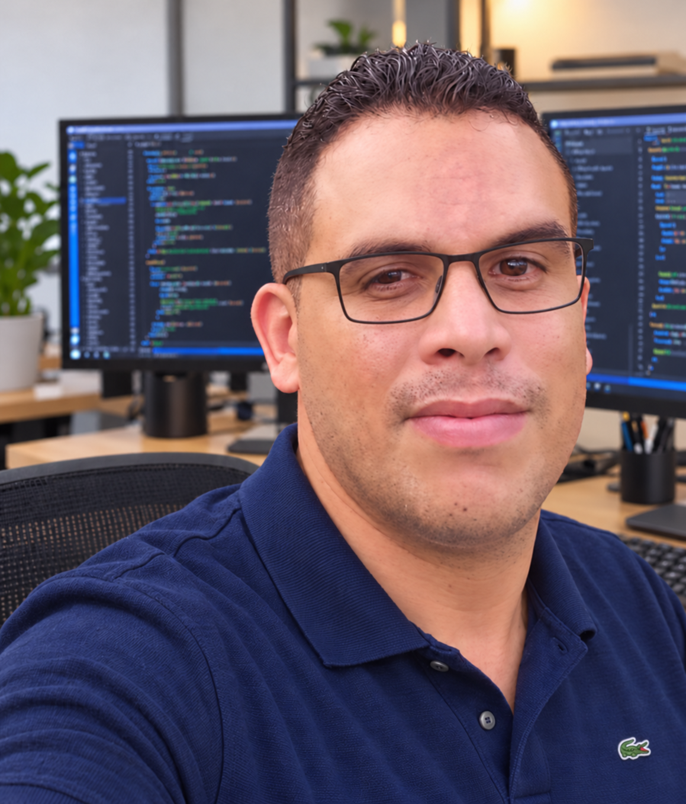

Desenvolvimento web
Estruturação de páginas e estudos de estilos para criar interfaces organizadas.
Estudante de Desenvolvimento de Sistemas, construindo meu caminho na tecnologia — uma ideia e uma linha de código de cada vez.

Sou Bruno César, estudante de Desenvolvimento de Sistemas na ETE. Estou desenvolvendo minha base em programação, criação de interfaces web e bancos de dados por meio de atividades e projetos acadêmicos.
Meu aprendizado passa por lógica de programação, exercícios em Python, modelagem de dados com SQL e estruturação de páginas com HTML e CSS. Este espaço reúne parte dessa jornada e dos temas que venho explorando.
Tecnologias e fundamentos que estou praticando ao longo da minha formação.
Estruturação de páginas e estudos de estilos para criar interfaces organizadas.
Exercícios com funções, listas, dicionários, estruturas de repetição e decisões.
Estudos de tabelas, relacionamentos e consultas para organizar informações.
Uma seleção dos projetos e atividades da minha formação em sistemas.
Proposta de plataforma web para centralizar conteúdos de três módulos e apoiar os estudos.
Atividade de estruturação de um ponto de venda com usuários, clientes, produtos e registros de vendas.
Proposta de aplicativo e telas em português voltadas ao tema de cidades e comunidades sustentáveis.
As capas são ilustrativas. As descrições apresentam propostas acadêmicas; demonstrações, arquivos e capturas de tela ainda não foram adicionados.
Para falar sobre meus estudos, projetos e oportunidades de aprendizado, envie um e-mail.